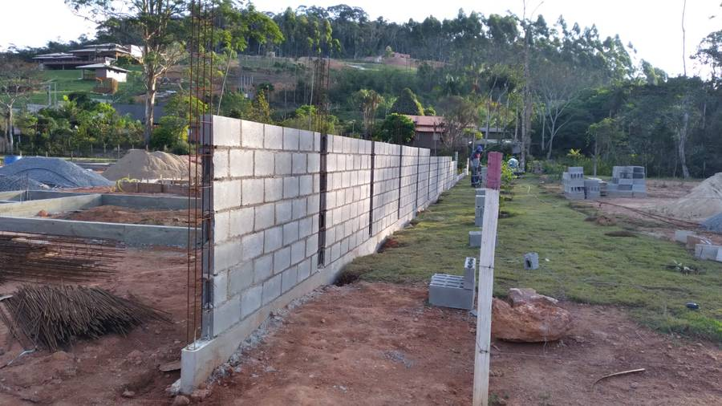
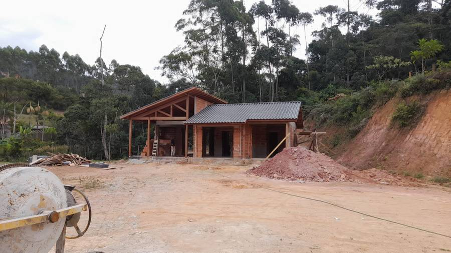
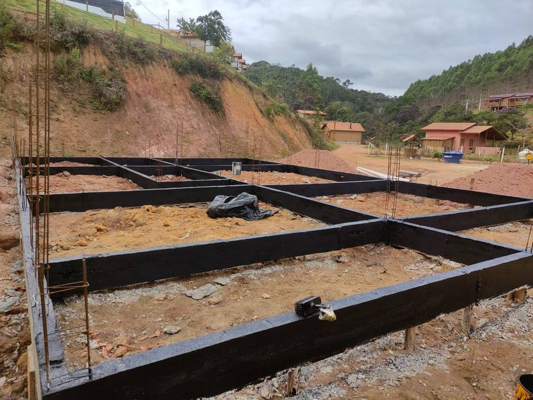
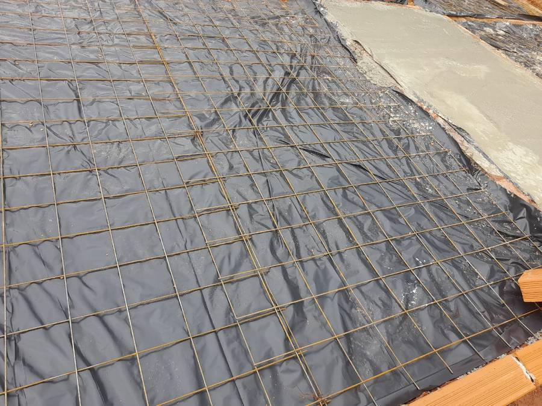
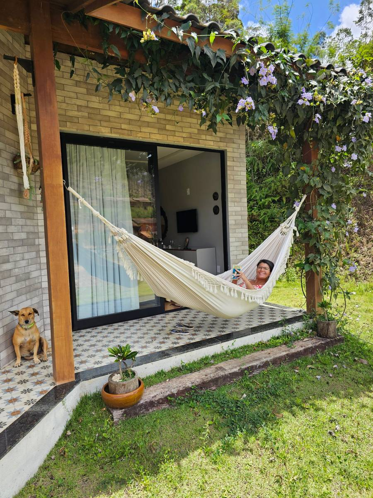

Quando construir em Santa Teresa: o calendário manda mais que a pressa
Acontece quase toda vez. A pessoa visita a região num fim de semana de dezembro, se apaixona, fecha o terreno em janeiro e quer colocar máquina no mês seguinte. É o pior momento possível para começar uma obra aqui — e quase ninguém sabe disso antes de alguém avisar.
Não é opinião minha. Está nos números da nossa própria chuva — e eu aprendi boa parte disso na prática, construindo a minha própria casa aqui no Circuito Caravaggio. As fotos deste artigo são todas dela.
A conta que decide tudo
Esta é a média de chuva de Santa Teresa, mês a mês, numa série de 30 anos — os mesmos números que eu já tinha usado no artigo sobre o clima daqui, agora olhados por outro ângulo:
| Mês | Chuva | Para obra |
|---|---|---|
| Janeiro | 160 mm | Ruim |
| Fevereiro | 116 mm | Ruim |
| Março | 171 mm | Ruim |
| Abril | 115 mm | Virada |
| Maio | 56 mm | Abre a janela |
| Junho | 35 mm | O melhor mês |
| Julho | 39 mm | Ótimo |
| Agosto | 46 mm | Ótimo |
| Setembro | 64 mm | Fecha a janela |
| Outubro | 119 mm | A chuva volta |
| Novembro | 236 mm | Pior do ano |
| Dezembro | 236 mm | Pior do ano |
Novembro e dezembro trazem 236 mm cada um. Junho traz 35. É quase sete vezes mais chuva no fim do ano do que no meio.
E tem uma leitura ainda mais útil que o mês a mês: de maio a setembro caem cerca de 240 mm somados nos cinco meses. Novembro e dezembro, sozinhos, passam de 470 mm em dois. A serra não tem uma estação chuvosa e uma estação seca equilibradas — ela tem uma janela.
A janela: maio a setembro
Cinco meses. É esse o espaço que o clima daqui te dá para fazer o que não pode tomar chuva.
E aqui está o ponto que muita gente entende errado: ninguém constrói uma casa inteira em cinco meses. A ideia não é "obra só no inverno". A ideia é encaixar as fases sensíveis à água dentro da janela e deixar para a chuva aquilo que pode acontecer debaixo de telhado.
O que a chuva atrapalha de verdade
Nem toda etapa sofre igual. Vale separar:
Movimento de terra e fundação — é aqui que mora o problema. Terreno encharcado não aceita máquina: o trator patina, atola, e o que era corte vira lamaçal. Vala aberta em solo saturado desbarranca sozinha. E solo com umidade alta demais não compacta — você passa o rolo, parece firme, e meses depois o piso trinca. Num terreno em declive, que é o normal por aqui, isso deixa de ser inconveniente e vira risco.
Drenagem — entra junto, não depois. A água que desce em dezembro é a mesma que você não vê em julho, quando está visitando o terreno. Dreno, canaleta e caixa de brita se fazem no seco, pensando na chuva.
Estrutura e alvenaria — toleram. Uma chuva de tarde atrapalha o dia, não a obra. Concreto fresco apanhando chuva forte é problema sério, mas é questão de proteger a peça, não de parar o calendário.

Cobertura — é o marco. Telhado colocado é o divisor de águas, literalmente. Antes dele, chuva é prejuízo. Depois dele, chuva é só barulho bonito no telhado.
Acabamento — depende da umidade, não da chuva. Reboco, massa e pintura precisam secar. Em dezembro, com umidade alta e neblina de fim de tarde, tinta demora e mofo aparece em parede que ainda nem foi entregue. Acabamento interno, com a casa fechada, dá para tocar. Pintura externa, aí não: essa espera o tempo firme.
A data que importa
Se eu tivesse que reduzir o artigo inteiro a uma frase, seria esta: casa coberta antes de outubro.

Esse é o prazo real. Tudo que vem antes do telhado — terraplenagem, fundação, drenagem, estrutura — precisa caber entre abril e setembro. Se outubro chegar com a obra aberta, você vai passar cinco meses pagando diária para ver chover.
O problema que ninguém lembra: a estrada
Essa é bem nossa, e é a que mais pega gente de fora desprevenida.
Boa parte dos terrenos bons da região tem trecho de estrada de chão no acesso. Em julho, aquilo é um caminho tranquilo até de carro baixo. Em dezembro, é outra estrada — e é aí que a obra trava de um jeito que não tem nada a ver com o seu terreno:
- caminhão de areia e brita carregado não sobe barro;
- caminhão betoneira, que é pesado e tem pouco vão livre, simplesmente não vai;
- e o que não chega na obra não vira parede.
Ou seja: mesmo com o terreno seco, a logística pode parar. Vale conversar com quem mora na estrada antes de montar o cronograma.
E tem a água que falta
Essa é o outro lado da mesma moeda, e é bom saber antes.
Obra consome muita água: concreto, argamassa, cura, limpeza. E boa parte das propriedades daqui é abastecida por nascente ou poço. Acontece que agosto e setembro são o fim da estiagem — justamente quando a nascente está no ponto mais baixo do ano.
Então a mesma janela seca que é perfeita para o terreno é a que tem menos água disponível para trabalhar. Não é motivo para mudar o calendário, mas é motivo para resolver o abastecimento cedo: caixa d'água com volume de sobra instalada logo no começo, e um plano B se a nascente der sinal de fraqueza. Isso varia muito de propriedade para propriedade — vale perguntar ao vizinho como a dele se comporta no fim do inverno.
Aproveitando que estamos falando de chuva: a umidade se resolve no projeto
Até aqui falei de chuva como problema de cronograma. Mas tem um segundo jeito de a água estragar uma obra na serra, e esse não aparece durante a obra — aparece dois anos depois, na forma de tinta bolhando na base da parede, rodapé soltando e aquele cheiro de armário fechado.
É umidade ascendente. E ela se resolve numa fase em que ainda não custa quase nada: o projeto.

A casa não pode ficar no chão. O piso acabado precisa estar acima do nível do terreno — degrau na entrada, baldrame mais alto, o que for. Não é estética, é física: água corre no chão, e chuva de 236 mm bate no solo e respinga de volta na parede. Casa no nível do terreno molha pela base todo fim de ano, e não tem pintura que resolva.
Baldrame impermeabilizado, em cima e nas laterais. Concreto e bloco sugam água por capilaridade, igual papel-toalha encostado na poça. Se não existir uma barreira entre a fundação e a parede, a umidade do solo sobe pela alvenaria e reaparece uns 50 cm acima do piso.
Lona sob o contrapiso. Mesma lógica, na horizontal. Lona plástica sobre o solo compactado, antes de concretar, para o chão não entregar umidade ao piso. É um dos itens mais baratos da obra inteira e um dos mais caros de corrigir depois — corrigir significa quebrar piso.

E a parede que encosta no corte. Essa é a mais nossa de todas. Terreno em declive quase sempre vira casa com uma parede contra o talude — e aquela parede não está só fechando ambiente, está segurando terra molhada. Ela precisa de impermeabilização na face enterrada e de dreno atrás. Sem isso, a parede do fundo vive úmida, independente de quantas demãos de tinta levar.
O ponto que amarra tudo: nenhuma dessas quatro coisas dá para resolver depois. Todas custam pouco no projeto e na fundação. Todas custam caro, feio e malfeito na reforma. É por isso que, quando alguém me pergunta se vale contratar projeto para construir na serra, a resposta é sempre sim — não pela planta bonita, mas por isso aqui.
O calendário de gente, não só de chuva
Tem uma segunda camada que se soma à primeira, e piora exatamente o mesmo período.
Dezembro e janeiro são meses de férias, décimo terceiro e equipe indo passar o fim de ano com a família. Fevereiro tem carnaval no meio. Na prática, a construção desacelera justo quando a chuva aperta — e você fica com o pior dos dois mundos: equipe reduzida e terreno molhado.
No meio do ano é o contrário: tempo firme e mão de obra disponível.
A estação chuvosa tem uma função
Isso não quer dizer que o fim do ano seja tempo perdido. Quer dizer que ele serve para outra coisa.
A chuva é a estação do projeto. É quando se desenha, se orça, se aprova na prefeitura, se escolhe quem vai tocar a obra. Se você quer máquina no terreno em abril, o projeto precisa estar aprovado e o alvará na mão antes disso — e esse processo não acontece em três semanas.
Quem compra em dezembro e usa dezembro, janeiro, fevereiro e março para resolver papel chega em abril pronto para cavar. Quem compra em dezembro e tenta cavar em janeiro chega em abril ainda cavando.
Um calendário possível
Juntando tudo, o desenho que faz sentido aqui na serra:
- Nov a Mar — projeto, aprovação, orçamento, contratação. Nada de máquina.
- Abr a Mai — limpeza do terreno, movimento de terra, drenagem, fundação, impermeabilização dos baldrames.
- Jun a Ago — estrutura e alvenaria, no melhor tempo do ano.
- Set — cobertura. O telhado é a meta do mês.
- Out a Mar — acabamento interno, com a casa fechada e a chuva do lado de fora.
- Abr seguinte — pintura externa, calçada, paisagismo.
Dá uma obra de mais ou menos um ano com o calendário a favor, em vez de contra.
Meu recado
Comprar terreno na serra é a parte fácil e gostosa. Construir é onde o clima cobra a conta de quem não olhou o calendário. Eu sei porque construí a minha, e porque cada item deste artigo me custou uma conversa com pedreiro, uma mudança de planta ou um susto evitado a tempo.

Se você está pensando em comprar aqui, pergunte duas coisas antes de fechar: como fica o acesso na chuva, e para onde a água desce no terreno. As duas respostas você só consegue de verdade visitando na época errada — e é por isso que eu sempre sugiro conhecer a região em dezembro, não só em julho.
Eu, Milla Camata, prefiro que você compre sabendo disso.
Quer ver terrenos em Santa Teresa e no Circuito Caravaggio com quem conhece o acesso, a água e o declive de cada um?
Falar com a Milla no WhatsAppMédias mensais de chuva de Santa Teresa: mesma série de 30 anos usada no artigo sobre o clima da cidade. As recomendações de etapa, impermeabilização e drenagem deste texto são práticas correntes de construção adaptadas à realidade da serra, e não substituem projeto e acompanhamento de profissional habilitado — cada terreno tem solo, declive e drenagem próprios. O comportamento de nascentes no fim da estiagem varia de propriedade para propriedade. Fotos: da construção da minha casa, no Circuito Caravaggio.